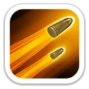
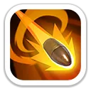
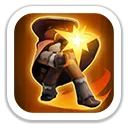
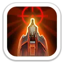
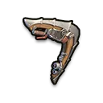
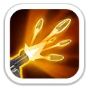

Возврат урагана
Уэйн бросает бумеранг по прямой линии, нанося 100%/110%/120%/130%/140% атаки. На обратном пути бумеранг снова наносит такой же урон всем целям на пути.

Критический урон · двойной удар бумеранга · Арена
Уэйн — атакующий стрелок 6 поколения. В Освоении он быстро разгоняет урон за счёт повторных обычных атак и критических ударов, а в Экспедиции добавляет всей армии периодические дополнительные атаки и критический шанс.
Максимальные значения героя 6 поколения.
Основной набор для Арены и Освоения.
Уэйн бросает бумеранг по прямой линии, нанося 100%/110%/120%/130%/140% атаки. На обратном пути бумеранг снова наносит такой же урон всем целям на пути.

Каждая обычная атака с вероятностью 15%/20%/25%/30%/35% вызывает ещё одну обычную атаку.

Повышает вероятность критического удара Уэйна на 3%/6%/9%/12%/15% при нанесении урона.
Походные навыки усиливают всю армию, но один из них особенно выгоден против копейщиков.
Каждые 4 хода все войска проводят дополнительную атаку, нанося 20%/40%/60%/80%/100% урона.

При каждой второй атаке стрелки наносят на 8%/16%/24%/32%/40% больше урона вражеским копейщикам и на 4%/8%/12%/16%/20% больше урона вражеским стрелкам.

Даёт атакам всех войск вероятность критического удара 5%/10%/15%/20%/25%.

Максимальные характеристики: +1 457 атаки героя · +1 201 защиты · +9 011 здоровья · +133.5% смертоносности · +133.5% здоровья войск.

Один из самых сильных сценариев: двойной проход бумеранга, повторные атаки и криты дают очень высокий урон по задней линии.
Хорош как атакующий стрелок, особенно против составов с сильной долей копейщиков.
Особое снаряжение усиливает смертоносность обороняющихся войск на 15%, поэтому здесь оно раскрывается лучше всего.
Играбелен благодаря «Громовому удару» и «Стремительности», но снаряжение работает на оборону. Для многих составов Гвен остаётся выгоднее.
Уэйн — сильный стрелок 6 поколения с явным уклоном в Арену и PvP. Для игроков, которые готовы вкладываться в платного героя, он даёт высокий личный DPS и хороший критический пакет всей армии. Для F2P разумнее сначала закрыть Рене через Колесо удачи.